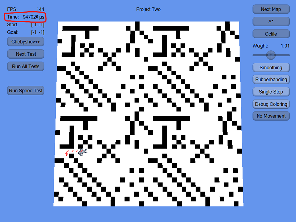

For our Game AI class (CS380) at DigiPen, we were tasked with programming the A* pathfinding algorithm for an agent. As an incentive for programming an efficient solution, the professor started a class-wide (~60 people) contest to see who's implementation was the fastest. I jumped at the opportunity, I and ended up being the fastest implementation across both sections.
Here is a full description of what A* is. In summary, A* is an algorithm to search for a path between two points in a graph (can be a grid, waypoints, triangle mesh, etc). It does this by exploring nodes from the start outward choosing nodes it guesses are closer to the target.
The most common operation in A* is finding the next cheapest node to explore in the open list. Pushing and popping nodes are also very common. Therefore, these are the operations you want to be cheap. The most popular way of implementing the open list is to use a heap for the nodes. This lets you pop and push in O(log(n)) time. While this may be good for general solutions, our project was guaranteed to be a square 2D graph with max 10,000 nodes.
My first idea was to keep the list sorted using Radix sort. This seemed better than using a heap because popping is constant-time and the list can be re-sorted in O(n) time. After doing research on Radix sort and implementing it for floating point numbers, my stress-test runtime went from about 250ms to 1000ms. Obviously, resorted each push was getting to be too expensive.
My next idea was to use a lookup table for nodes. This seemed desirable because you need to consider many fewer nodes when pushing and popping. You can "hash" nodes by multiplying their cost by some number and flooring the result. Collisions can be handled using an array. This allows you to use more memory to reduce the cost of node operations. And, since there was an upper bound on how many nodes there could be in an array, the memory cost was worth it. Once this hash table was implemented, my stress-test runtime went from 250ms to about 150ms. I was very happy with this result!
I tried to push this idea further and keep each "bucket" in the hash table sorted using both Radix sort a heap, or even insertion sort. Then, you don't need to search for the cheapest node in the array. I considered insertion sort because it's close to linear time if the list is almost sorted. But, since the buckets were so small, it was faster to just linearly search the array for the cheapest one. I found, at most, you only needed to search about 10 nodes per pop operation.
After profiling the tests, I was surprised to find that resetting the grid after each search was a performance issue. Iterating through 10,000 nodes and clearing its memory was too expensive. So, when doing a search, I simply added each modified node to a list. When the search was complete, I only needed to reset the nodes in that list. This optimization was much better than I expected. The stress-test runtime went from 150ms to about 95ms! At this point, I was happy with the result. Also, I had already put ~30 hours into this project and needed to move on.
If I had more time, here are some ideas I'd like to explore to optimize the algorithm further: